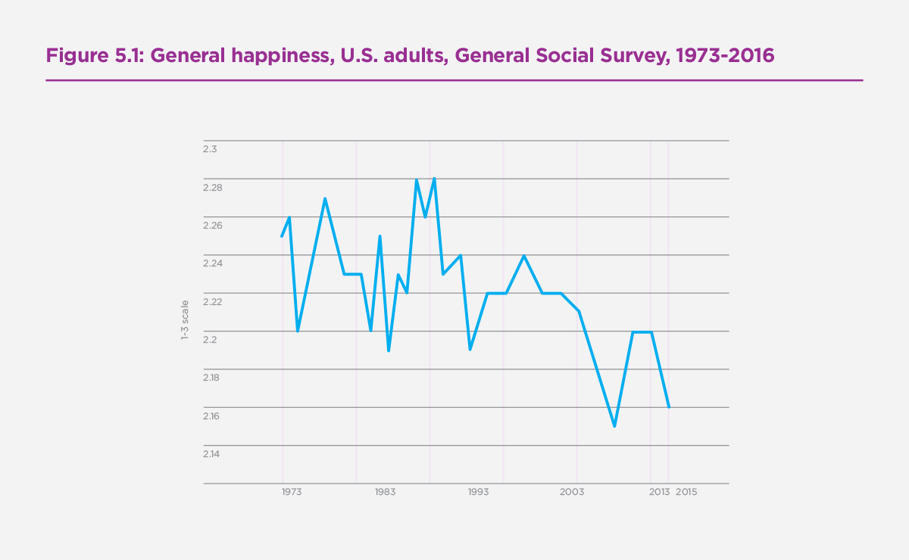
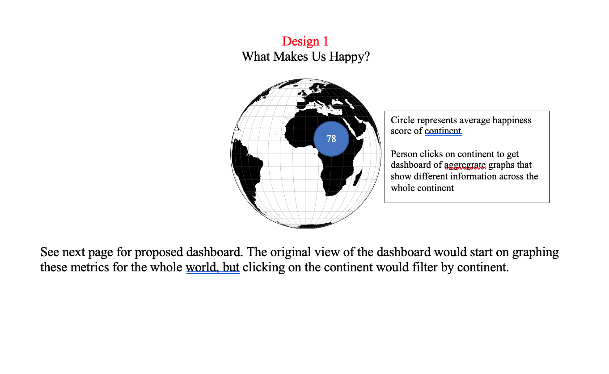
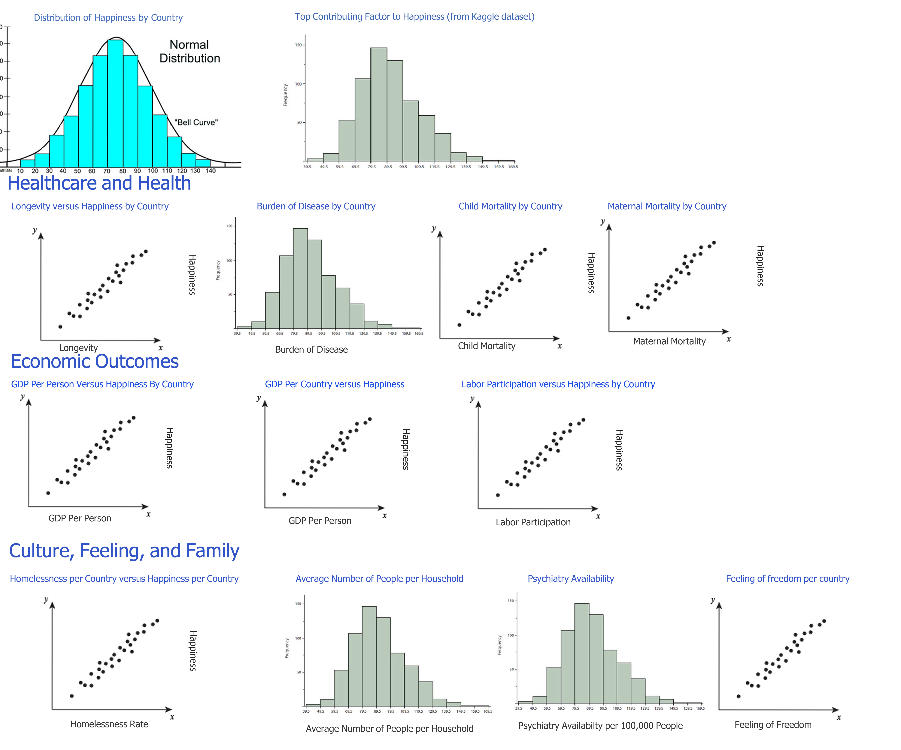
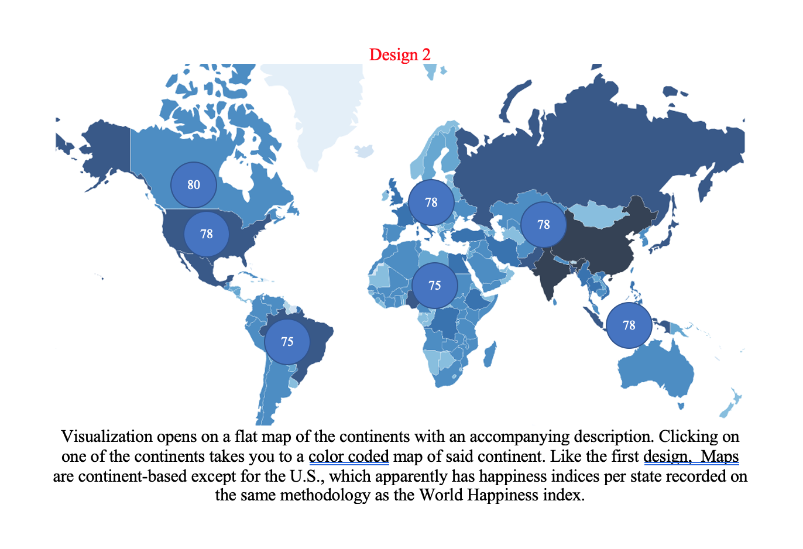
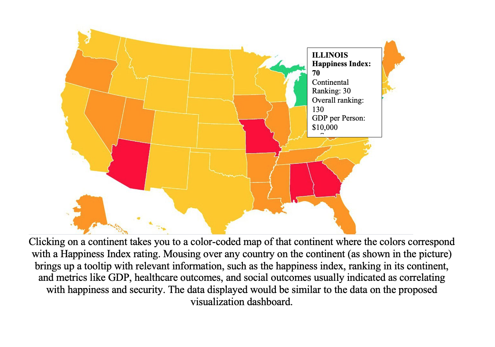
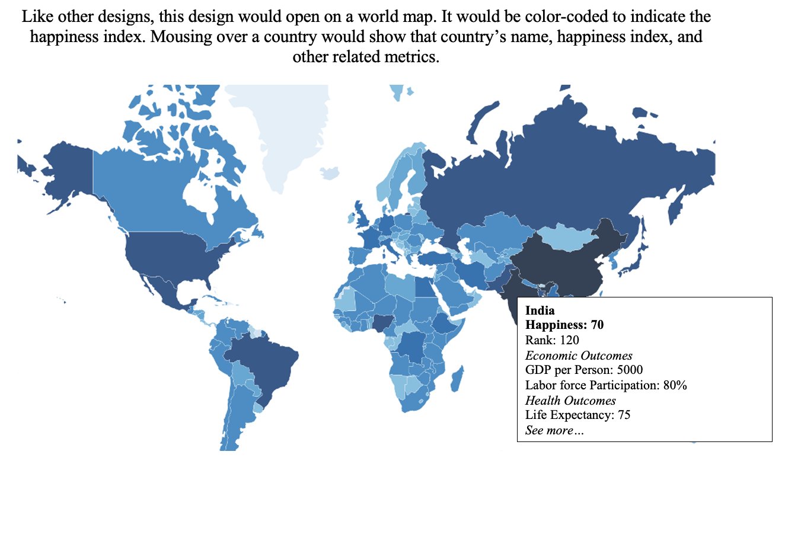

Project Proposal -- AJJAX
Basic Info
Project Title: (SMILE)
AJJAX'S Group Members
Andy Wu
wu.tianqi@wustl.edu
464490
Julia Smith
julia.smith@wustl.edu
457271
Jordan Stone
jordans2299@gmail.com
465595
Background and Motivation
Our project will be centered around answering the questions of what
happiness is, and more importantly how can we bring more of it to the world. While these may seem like simple and
trivial questions, we think that there is a level of complexity when trying to
maximize human happiness and this complexity is only magnified when
trying to maximize happiness for large diverse groups. Furthermore, we are also interested in seeing what we should
prioritize in our own life to reach maximum happiness. To examine happiness,
we will be using the World Happiness report published annually by the United Nations since 2012.
This report ranks all the countries by their happiness score which is based on numerous factors,
such as GDP, life expectancy, freedom, and trust in government.
To provide more context for this data, we will include additional data
sets providing more details about each country for that specific year.
From here you should be able to get a sense of what factors have the most significant
impact on a particular country's happiness rank, and factors should we deem most important
when evaluating a country’s well being.
- What makes human happiness?
- Question is important more now that we are getting into an uncertain world
- What lessons can we take from other countries, since the U.S.'s' happiness index lags behind other countries?
Project Objectives
With this visualization there are numerous questions we are trying to answer regarding the happiness in the world.
- What are the common markers for the most happy countries?
- Is there a way to quantify variables for human happiness such as health, finance, etc.?
- How important is economic progress to happiness? How important are other factors?
- What lessons can we take from the most happy countries?
- What lessons can we take from the least happy countries?
From asking answer these questions, we hope to get a better idea of what
makes people happy, as well as how we can make society better overall.
Discovering this is important because the U.S. has lost a lot of smiles over the years,
and most people haven't even realized it. As we can see from the graph below from the official World Happiness Report, U.S. happiness
has declined from 2.26 to 2.16 from 1973 to 2013.

From a policy perspective, there is often a lot of focus on indicators like the GDP, stock market, and the overall unemployment rate.policy
doesn't seem to always focus on overall human happiness because it may be seen as something "unquantifiable." With this project, we fundamentally set
out to show that happiness is quantifiable and associated metrics can be used to make policy changes that ensure a more productive, happy, and healthy society. We hope to discover
not just how well common economic indicators are correlated with happiness, but how other factors influence life as well.
Data
Auxiliary economic data that is not included in the original dataset,
e.g. GDP, government debt, and homelessness will have to come from outside our original datsets.
Our data includes data about health, including overall physical health, access to healthcare, and healthcare outcomes. We also include environmental
health and government corruption datasets in case we find interesting correlation in those datasets. These datasets
are collected from reputable sources, such as the Gallup Poll, the World Health Organization, United Nations and the World Values Survey.
Data Processing
Data Gathering
Most of our data is already available somewhere on the Internet in a table or JSON format, so we don't expect to do much data gathering in this regard. The only
data we will have to process is the home size statistics from the UN and the world homeless statistics, as both don't make their tables public.
Data Processing
Most datasets already exist in a helpful table format with clear documentation and methodology, meaning that we may not need to do a lot of processing; however,
we will have to clean some of the date range data to remove sections we don't need. This can be done through Python or even through manual deletion. We may not even have to combine data very much, as it even seems that most datasets we would like to use have already been combined with other datasets (at least in the case of the Our World in Data datasets).
However, in order to make our vision work, we will definitely need to employ multiple sorting and filtering functions to create full functionality. This will
be employed through Javascript.
Derived Quantities
With the vast amount of data we have to work with, it is difficult to say what quantities will be derived.
In general, we will stick to raw quantities--e.g. quantities not adjusted by any sort of statistical normalization
or manipulation. Our later original design features the following data quantities by country and continent: happiness, longevity, GDP per country, GDP per person,
burden of disease, child mortality, mother mortality, homelessness, average home size, and feeling of freedom.
Visualization Designs
Design 1


Dashboard graph designs will be spiced up by using color scales. For example, each continent will have its own color associated with it
Design 2


Design 3

Underneath this world map would be multiple sections that provide a graph on the right side of the web page and a brief explanation or analysis on the left side to provide more context or point out interesting things, making it far more reliant on text than
Design 1, making the page more like a news article than a dashboard. Below is an example.

Sections of this design would include the following:
-
Color coded map of happiness index for the world
-
Scatterplot of happiness over time per continent
-
Distribution of happiness over world and per continent—histogram?
-
Scatterplot of overall country GDP versus happiness with option to filter by continent
-
Scatterplot of average wealth per person versus happiness with option to filter by continent
-
Longevity versus happiness with option to filter by continent
-
Child mortality rate versus happiness with option to filter by continent
-
Healthcare access versus happiness with option to filter by continent
-
Mental healthcare access with option to filter by continent
-
Burden of disease map color-coded by happiness with option to filter by continent
-
Homelessness rates with option to filter by continent
-
Average home size rate with option to filter by continent
-
Sense of freedom versus satisfaction with option to filter by continent
Final Visualization Design Justification
We chose Design 1 for our final visualization design for the following reasons:
-
Design 2 shows data per country, but doesn't adequately address trends across whole continents or countries.
Without correlation graphs, it is much more difficult to answer the question "what makes human happiness," making
it a vastly inferior choice to the others.
-
Design 3 shows much of the similar data in a similar format to Design 1, but features additional context in the form of
paragraphs. While this can be nice to point out interesting things on the graph, it requires the user to take attention away
from the visualization itself. A long wall of text may cause some level of disinterest.
Based on this assessment, Design 1 better answers the questions we posed in our original objective and prevents
distraction from the visualization itself.
Must-Have Features
- In order to present happy index for any individual country, a map or globe of the world is required with color coding based on the level of happiness..
- Also, we need a way to specify or select any individual country in the map.
- To measure/show the changes of happiness, we need to respond to selection of dates, continents, or countries for the visualization
- Brushing needs to be employed for most charts to allow zooming in on a certain section.
- Scatterplots and line plots should have tooltips that show the country and data associated with each point.
- Frequency and bar charts should have tooltips that also display what countries are associated with each metric.
- All charts should have a color change associated with hovering over a data point.
Optional Features
- Map could have interactive zoom features to highlight the continents in more detail.
- Ability to build visualizations based on country selections--e.g. custom adding and removal of countries
- Transitions for adding, removing data, creating a smoother user experience
Project Schedule
We hope to have this project done by mid- to late- December. However, this
final deadline may change.
| Monday of that Week |
Julia's Assignment |
Andy's Assignment |
Jordan's Assignment |
| Nov. 16 |
Proposal |
Proposal |
Proposal |
| Nov. 23--Iteration 1 |
Prototype for Distribution of Happiness, Top Contributing Factor to Happiness, Longevity, Burden of Disease, Child Mortality, Updates |
Prototype for Economic Outcomes, Maternal Mortality |
Culture, Feeling, and Family |
| Nov.30 |
Clickable map and attach click event to filtering, scrubbing graphs |
Tooltips for data points or data bars, scrubbing for graphs |
Filtering data by continent |
| Dec. 7--Iteration 2 |
Color scale for happiness on map, clickable map |
Color changing when clicking on data points/bars/whatever in chart |
Color scale for continent visualizations |
| Dec. 14 |
Implementing country by-country filtering--extend to one country |
Implement country-by-country filtering--extend to multiple countries |
Implementing a search function/dropdown to select countries |
| Dec. 21 |
Zoom on map, implement whatever charts found interesting |
Transitions, whatever he's interested in |
Tweaks user experience for flow and clarity, whatever he's interested in |
Possible Complications
Complications with Data
Though we've tried to gather as many datasets as we can and vetted the
legitimacy of each one, we understand that we may need to include other datasets if we
find that some dataset does not fully design our purposes. In this case, we will verify with other group members
and class staff before doing so.
Complications with Design
Over the duration of this project, we expect to find interesting correlations in the data that we may not have
included in our original design--hence the extra datasets. If we think that adding a new chart or section will help with the understanding of human happiness,
we will discuss with each other and with the course staff.